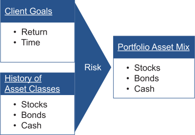

Now that we have examined the principles, theories, and techniques of asset allocation, let's turn our attention to the process by which asset allocation is implemented with clients.
There are two general approaches to asset allocation: Strategic and Tactical.
Strategic asset allocation is designed for a longer-term perspective. In this process, portfolios are not traded frequently but are simply rebalanced periodically to maintain the desired asset allocation that is most likely to reach the longer-term objectives of the client. The chart below helps describe the process of strategic asset allocation.
Click each box to learn more.

Because strategic asset allocation is based on client objectives, it must take into consideration the time horizons associated with these objectives.
Below are examples of client/prospect objectives and the time horizons typically associated with them: